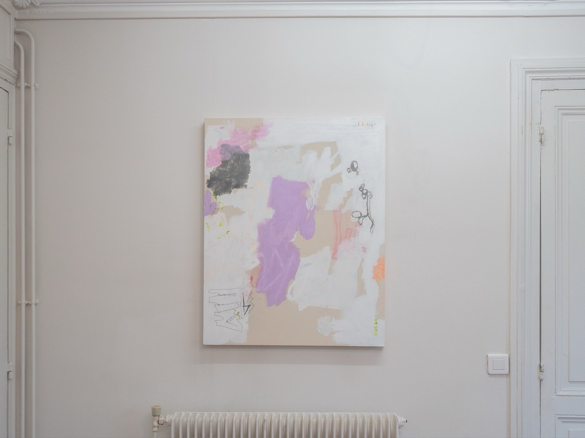
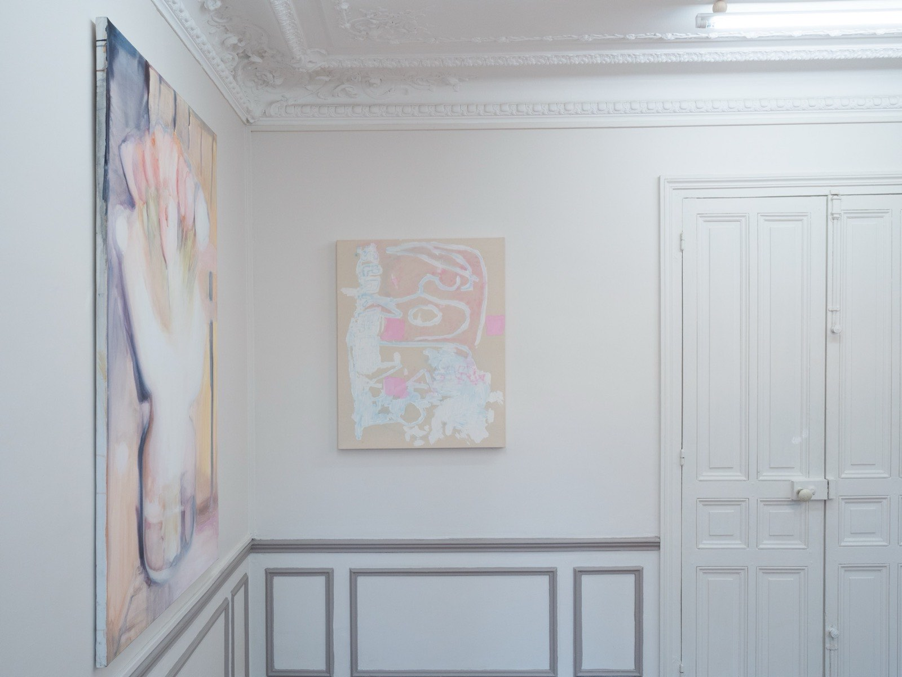
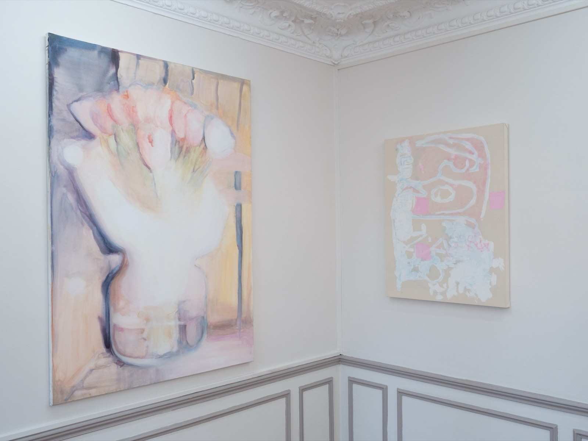
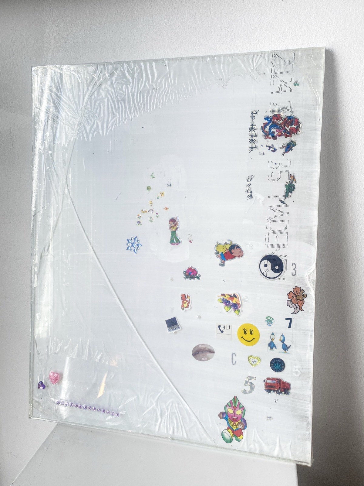
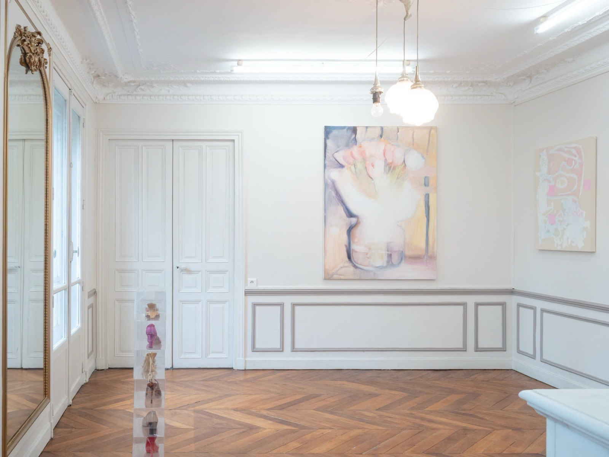

Caroline Ventura
Entrée 003 · Magenta Made Me Hardcore
Caroline Ventura (born 1994, Lausanne) is a visual artist who graduated from ECAL in 2016 with a BA in Visual Arts, receiving the Walter & Eve Kent Scholarship and the Prix du Risque. She later completed the Work.Master at HEAD in Geneva, took part in the Summer Academy at the Swiss Institute in Rome, and spent her final year in Paris. A finalist for the Swiss Art Awards in 2021, she has shown her work mainly in Switzerland, France and Germany, including at Café des Glaces (Tonnerre), sic! Elephanthouse (Lucerne), Spoiler.zone (Berlin) and Tada Space (Denmark). In 2024, she published her first book, More Beautiful Than They Are, accompanied by an exhibition at sic! Elephanthouse. In 2025, she received a research travel grant from Pro Helvetia and spent a month in Lisbon to begin developing her film project Ponte de Vista. That same year, she co-curated two independent exhibitions in Paris and Zurich under the name good company.
Her practice is driven by gesture, repetition and collection, with painting acting as a compositional force in itself. Inspired by the energy of urban environments and the visual culture of her adolescence, she translates the density of the city into vibrant surfaces built from rhythm, layering and tension. Working across latex, mirror, paper and canvas, she uses each support to shift perception and create moments of appearance, reflection or disappearance. Balancing control and improvisation, her work moves between softness and directness, opening a space where colours, forms and gestures interact freely and generate their own internal logic.
Œuvres — 3 entrées

Caroline Ventura, Sans titre (air), 2026. Peinture — châssis bois hêtre, toile coton, mixed medium, 92 × 73 cm. Courtoisie de l'artiste. Kramer.
Demander la fiche →
«Magenta Made Me Hardcore», vue d'installation, KRAMER, Paris, 2026. Photo : Kramer.

«Magenta Made Me Hardcore», vue d'installation, KRAMER, Paris, 2026. Photo : Kramer.
Demander la fiche →
Caroline Ventura, Stickers (2026), 2026. Peinture — plexiglass, gesso, autocollants, scotch, 33 × 24 cm. Courtoisie de l'artiste. Kramer.
Demander la fiche →
«Magenta Made Me Hardcore», vue d'installation, KRAMER, Paris, 2026. Photo : Kramer.